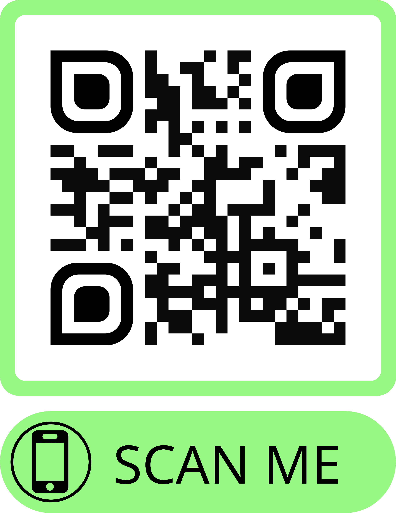

<!-- student-create.html-->
<ion-header>
  <ion-toolbar color='dark'>
    <ion-title class="ion-text-center">Link de Acesso </ion-title>
  </ion-toolbar>
</ion-header>

 
<ion-content class="ion-text-center">
  
  <ion-item>  
  <ion-button color="dark" [routerLink]="['/student-list']">
    Voltar 
  </ion-button>
</ion-item>
</ion-content>

